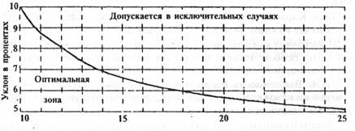
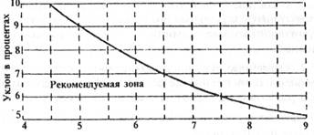

ПРОЕКТИРОВАНИЕ СРЕДЫ
ЖИЗНЕДЕЯТЕЛЬНОСТИ
С УЧЕТОМ ПОТРЕБНОСТЕЙ
ИНВАЛИДОВ И МАЛОМОБИЛЬНЫХ ГРУПП
НАСЕЛЕНИЯ
ВСН 62-91*
РАЗРАБОТАНЫ ЦНИИЭП им. Б. С. Мезенцева (канд. архитектуры Н. Б. Мезенцева - руководитель темы, канд. архитектуры Е. М. Лось, архит. Н. А. Клементьев), ЦНИИП градостроительства (А. А. Бойченко), ЦНИИЭП жилища (канд. архитектуры Е. Ю. Пересветов, В. Г. Страшнов, Н. С. Милославская), ЦНИИЭП учебных зданий (кандидаты архитектуры Н. Н. Щетинина, М. Н. Тюричева), ЦНИИЭП курортно-туристских зданий и комплексов (кандидаты архитектуры Н. О. Шенгелия, Е. М. Либерман), Госкомархитектуры (Ю. В. Колосов) при участии канд. архитектуры Ю. А. Федутинова и специалистов Республики Эстония (архит. Х. Ю. Калмета и канд. техн. наук Т. Х. Кару).
ВНЕСЕНЫ ЦНИИЭП им. Б. С. Мезенцева.
ПОДГОТОВЛЕНЫ К УТВЕРЖДЕНИЮ Госкомархитектуры (Ю. В. Колосов).
С введением в действие ВСН 62-91* Госкомархитектуры "Проектирование среды жизнедеятельности с учетом потребностей инвалидов и маломобильных групп населения" утрачивает силу “Типовая инструкция по обеспечению передвижения инвалидов, пользующихся креслами-колясками, в проектах общественных зданий, планировке и застройке населенных мест".
ВСН 62-91* является переизданием ВСН 62-91 с изменениями, утвержденными приказом Госкомархитектуры 29 ноября 1991 г. № 166 и постановлением Минстроя России 26 июля 1994 г. № 18-3.
Номера пунктов и приложений, в которые внесены изменения, отмечены звездочкой.
При пользовании ведомственными строительными нормами следует учитывать утвержденные изменения строительных норм и правил и государственных стандартов, публикуемые в "Бюллетене строительной техники" и информационном указателе "Государственные стандарты".
|
Государственный комитет по архитектуре и градостроительству при Госстрое СССР (Госкомархитектуры) |
Ведомственные строительные нормы |
ВСН 62-91* |
|
Проектирование среды жизнедеятельности с учетом потребностей инвалидов и маломобильных групп населения |
Взамен Типовой инструкции по обеспечению передвижения инвалидов, пользующихся креслами-колясками, в проектах общественных зданий, планировке и застройке населенных мест |
*Настоящие нормы и правила распространяются на проектирование планировки и застройки населенных мест, разработку проектов на строительство новых и реконструкцию эксплуатируемых зданий и сооружений в целях создания полноценной среды жизнедеятельности с учетом потребностей инвалидов и других маломобильных групп населения. При проектировании следует соблюдать требования СНиП 2.07.01-89*, СНиП 2.08.01-89 и СНиП 2.08.02-89* и других действующих нормативных документов.
В случаях когда при реконструкции застройки существующих зданий и сооружений, а также исторических и культурных памятников изложенные в настоящем документе требования (кроме требований безопасности) не могут быть выполнены в полном объеме, по согласованию с территориальными органами архитектуры и градостроительства, государственного надзора, социальной защиты населения (включая общественные организации инвалидов) следует принимать решения, в наибольшей степени обеспечивающие жизнедеятельность инвалидов и престарелых, а также возможность передвижения пешеходов с детскими колясками.
Требования настоящего документа обязательны для всех министерств, ведомств, предприятий, учреждений и организаций, разрабатывающих и реализующих в строительстве проекты планировки и застройки населенных мест, а также проектные решения отдельных зданий, сооружений и их комплексов жилищно-гражданского и производственного назначения.
|
Утверждены |
Срок введения в действие |
1.1.1. При разработке проектов планировки и застройки населенных мест следует исходить из необходимости создания условий для полноценной жизнедеятельности инвалидов и маломобильных групп населения.
1.1.2. Жилые районы населенных мест и их улично-дорожная сеть должны проектироваться с учетом прокладки пешеходных маршрутов для инвалидов и маломобильных групп населения с устройством доступных им подходов к площадкам и местам посадки в общественный транспорт.
1.1.3. В районах нового строительства следует обеспечивать расположение жилых зданий с квартирами для инвалидов на креслах-колясках в радиусе обслуживания предприятий торговли товарами повседневного спроса и комплексных приемных пунктов предприятий бытового обслуживания не более 300 м.
1.1.4. Специализированные жилые здания и специализированные детские учреждения следует располагать на расстоянии не более 3000 м от пожарных депо.
1.1.5. Специализированные детские учреждения следует размещать в озелененных районах, на расстоянии не менее 3000 м от промышленных предприятий, улиц и дорог с интенсивным движением транспорта и железнодорожных путей, а также других источников повышенного шума, загрязнения воздуха и почвы. Специализированные школы-интернаты для детей с нарушениями зрения и слуха следует располагать на расстоянии не менее 1500 м от радиостанций, радиорелейных установок и пультов.
1.2.1. Расчетную площадь земельных участков домов-интернатов для инвалидов и престарелых, территориальных центров социального обслуживания и специализированных детских учреждении следует принимать в соответствии с табл. 1 и 2.
1.2.2. Расчетный показатель площади участка специализированного дошкольного учреждения следует принимать не менее 60 м2 на 1 место.
|
Типы зданий |
Вместимость, мест |
|
|
Дома-интернаты для инвалидов и престарелых |
до 50 |
200 |
|
51-100 |
175 |
|
|
101-200 |
125 |
|
|
201-300 |
100 |
|
|
Территориальные центры социального обслуживания |
до 50 |
150 |
|
51-75 |
125 |
|
|
76-100 |
100 |
Примечание. Площадь земельных участков домов-интернатов, размещаемых в пригородной зоне, вблизи парков и лесопарков, а также в условиях сложившейся застройки, допускается уменьшать, но не более чем на 20 %.
|
Число параллельных классов |
Площадь земельного участка, м2, на 1 воспитанника в спецшколах-интернатах для детей, не менее |
|||
|
с нарушениями |
с тяжелыми последствиями полиомиелита и церебральных параличей |
|||
|
слуха |
зрения |
интеллекта |
||
|
1 |
200 |
205 |
225 |
180 |
|
2 |
160 |
160 |
180 |
140 |
|
Площадь земельного участка, м2, на 1 воспитанника, не менее |
|||
|
способных к самостоятельному передвижению |
способных к самостоятельному передвижению |
не способных к самостоятельному передвижению |
|
|
100 |
120 |
80 |
50 |
Примечание. Площадь земельных участков домов-интернатов для умственно отсталых детей допускался уменьшать, но не более чем на 15 %.
1.2.3. Расчетный показатель площади земельных участков домов-интернатов для умственно отсталых детей следует принимать в соответствии с табл. 3.
1.2.4. На территориях специализированных дошкольных учреждений и домов-интернатов для умственно отсталых детей, кроме расположенных в IА, IБ, IГ и IIА климатических подрайонах, следует предусматривать учебно-опытные площадки расчетной площадью не менее 0,6 м2 на 1 воспитанника.
1.2.5. Земельные участки специализированных детских учреждений и домов-интернатов для инвалидов и престарелых должны иметь ограждение высотой не менее 1,6 м, а психоневрологических интернатов и домов-интернатов для умственно отсталых детей - заборы высотой не менее 2 м.
2.1.1. Зона для размещения кресла-коляски должна иметь ширину не менее 0,9 м и длину не менее 1,5 м.
2.1.2.* Ширина прохода при одностороннем движении должна быть не менее 1,2 м, при двухстороннем - не менее 1,8 м.
2.1.3. Высота прохода до низа выступающих конструкций должна быть не менее 2,1 м.
2.1.4.* Размеры площадки для поворота кресла-коляски на 90° должны быть не менее 1,3´1,3 м, для поворота на 180° - не менее 1,3´1,5 м, для разворота на 360° - не менее 1,5´1,5 м.
Пространство под элементами и частями зданий, оборудования или мебели, используемое для подъезда кресел-колясок, должно иметь ширину по фронту оборудования или мебели не менее 0,6 м и высоту не менее 0,6 м над уровнем пола или пешеходного пути. Подходы к оборудованию и мебели должны иметь ширину не менее 0,9 м, а при необходимости поворота кресла-коляски на 90° - не менее 1,2 м.
2.1.5. Объекты и устройства (почтовые ящики, укрытия таксофонов, информационные щиты и т.п.), размещаемые на стенах зданий, сооружений или на отдельных конструкциях, а также выступающие элементы и части зданий и сооружений не должны сокращать пространство, необходимое для проезда и маневрирования кресла-коляски.
Такие объекты, элементы или части здании и сооружении, нижняя кромка которых расположена на высоте в пределах от 0,7 до 2,1 м от уровня пешеходного пути, не должны выступать за поверхность основной несущей конструкции более чем на 0,1 м, а при размещении на отдельно стоящей опоре - не более 0,3 м. При увеличении этого размера пространство под выступающими объектами, частями зданий или сооружений должно быть выделено бортиком высотой не менее 3 см.
2.2.1. Уклоны пешеходных дорожек и тротуаров, которые предназначаются для пользования инвалидами на креслах-колясках и престарелых, не должны превышать: продольный - 5%, поперечный - 1%. В случаях, когда по условиям рельефа невозможно обеспечить указанные пределы, допускается увеличивать продольный уклон до 10% на протяжении не более 12 м пути с устройством горизонтальных промежуточных площадок вдоль спуска.
2.2.2. В местах пересечения пешеходных путей с проезжей частью улиц и дорог высота бортовых камней тротуара должна быть не менее 2,5 см и не превышать 4 см. Не допускается в местах переходов применение бортовых камней со скошенной верхней гранью или съездов, сужающих ширину проезжей части.
Переходы на крупных и сложных транспортных развязках следует снабжать защитными ограждениями.
2.2.3. Ширина пешеходного пути через островок безопасности в местах перехода через проезжую часть улиц должна быть не менее 3 м, длина - не менее 2 м.
2.2.4.* В жилых районах и микрорайонах вдоль пешеходных дорожек и тротуаров, предназначенных для передвижения инвалидов, следует предусматривать не реже чем через 300 м места отдыха со скамейками.
2.2.5. Опасные для инвалидов участки и пространства следует огораживать бортовым камнем высотой не менее 5 см.
2.2.6. При проектировании путей эвакуации инвалидов следует исходить из того, что эти пути должны соответствовать требованиям обеспечения их доступности и безопасности для передвижения инвалидов.
2.3.1. Поверхности покрытий пешеходных путей и полов помещений в зданиях и сооружениях, которыми пользуются инвалиды, должны быть твердыми, прочными и не допускать скольжения.
2.3.2. Для покрытий пешеходных дорожек, тротуаров и пандусов не допускается применение насыпных, чрезмерно рифленых или структурированных материалов. Покрытие из бетонных плит должно быть ровным, а толщина швов между плитами - не более 1,5 см.
2.3.3. Ковровые покрытия должны плотно закрепляться, особенно по краям ковров. Толщина покрытия из ворсового ковра не должна превышать 1,3 см с учетом высоты ворса.
2.3.4. В спортивных залах поверхность покрытия пола игровых площадок и зон для занятий людей с полной или частичной потерей зрения должна быть ровной и гладкой.
2.3.5. Ребра решеток, устанавливаемых на путях движения инвалидов, должны располагаться перпендикулярно направлению движения и на расстоянии друг от друга не более 1,3 см.
2.3.6. Предупреждающую информацию для людей с полной и частичной потерей зрения о приближении к препятствиям (лестницам, пешеходному переходу, окончанию островка безопасности и пр.) следует обеспечивать изменением фактуры поверхностного слоя покрытия дорожек и тротуаров, направляющими рельефными полосами и яркой контрастной окраской.
2.4.1. На располагаемых в пределах территории жилых районов открытых стоянках автомобилей, а также около учреждении культурно-бытового обслуживания населения, предприятий торговли и отдыха, спортивных зданий и сооружений, мест приложения труда следует выделять места для личных автотранспортных средств инвалидов.
Минимальное количество таких мест следует принимать из расчета: 4%, но не менее 1 места при общем числе мест на стоянке до 100; 3% - при общем числе мест 101 - 200; 2% - при числе мест 201 - 1000; 20 мест плюс не менее 1% на каждые 100 свыше 1000 мест при общей вместимости автостоянки более 1000 машино-мест.
2.4.2. На автомобильных стоянках при специализированных зданиях и сооружениях для инвалидов следует выделять для личных автомашин инвалидов не менее 10% мест, а около учреждений, специализирующихся на лечении спинальных больных и восстановлении опорно-двигательных функций, - не менее 20% мест.
2.4.3. Стоянки с местами для автомобилей инвалидов должны располагаться на расстоянии не более 50 м от общественных зданий, сооружений, жилых домов, в которых прожинают инвалиды, а также от входов на территории предприятий, использующих труд инвалидов.
2.4.4. Площадки для остановки специализированных средств общественного транспорта, перевозящих инвалидов, следует предусматривать на расстоянии не более 100 м от входов в общественные здания и не более 300 м от жилых зданий, в которых проживают инвалиды.
2.4.5. Места для стоянки личных автотранспортных средств инвалидов должны быть выделены разметкой и обозначены специальными символами. Ширина стоянки для автомобиля инвалида должна быть не менее 3,5 м.
2.5.1.* В местах перепала уровней, повышающего 4 см, между горизонтальными участками пешеходных путей или пола и зданиях и сооружениях следует предусматривать устройство пандусов и лестниц. Конструкции пандусов и их ограждений следует выполнять из несгораемых материалов с пределом огнестойкости не менее 2 ч.
В исключительных случаях допускается предусматривать винтовые пандусы, величина внутреннего радиуса которых рассчитывается в соответствии с приложением. Длина промежуточных горизонтальных площадок - винтового пандуса по внутреннему его радиусу должна составлять не менее 2 м.
2.5.2. Уклон каждого марша пандуса в зависимости от его длины не должен превышать величин, указанных в приложении.
2.5.3. В начале и конце каждого подъема пандуса следует устраивать горизонтальные площадки шириной не менее ширины пандуса и длиной не менее 1,5 м. При изменении направления пандуса ширина горизонтальной площадки должна обеспечивать возможность поворота кресла-коляски.
2.5.4. По внешним боковым краям пандуса и площадок следует предусматривать бортики высотой не менее 5 см.
2.5.5. Ступени лестниц на путях движения инвалидов должны быть глухими, ровными, без выступов и с шероховатой поверхностью. Ребро ступени должно иметь закругление радиусом не более 5 см. По не примыкающим к стенам боковым краям лестничного марша ступени должны иметь бортики высотой не менее 2 см.
Ширина проступей должна быть: для наружных лестниц - не менее 40 см, для внутренних лестниц в зданиях и сооружениях - не менее 30 см; высота подъемов ступеней: для наружных лестниц - не более 12 см, для внутренних - не более 15 см.
2.5.6. По обеим сторонам пандуса или предназначенного для передвижения инвалидов лестничного марша должны предусматриваться ограждения высотой не менее 0,9 м с поручнями. Поручни в этих случаях следует предусматривать двойными на высоте 0,7 и 0,9 м, а для детей дошкольного возраста - на высоте 0,5 м. Длина поручней должна быть больше длины пандуса или марша лестницы с каждой их стороны не менее чем на 0,3 м.
Поручни должны быть круглого сечения диаметром не менее 3 и не более 5 см или прямоугольного сечения толщиной не более 0,04 м.
2.5.7.* Пандус, служащий путем эвакуации со второго и вышележащих этажей, должен быть непосредственно связан с выходом наружу из здания и сооружения.
2.6.1. Все здания и сооружения, которыми могут пользоваться инвалиды, должны иметь не менее одного доступного для них входа, который при необходимости должен быть оборудован пандусом или другим устройством, обеспечивающим возможность подъема инвалида на уровень входа в здание, его первого этажа или лифтового холла.
2.6.2. Предназначенные для инвалидов входы в здания и сооружения следует защищать от атмосферных осадков и предусматривать перед входом площадку размером в плане не менее 1´2,5 м с дренажем, а в зависимости от местных климатических условий - с подогревом.
2.6.3. Предназначенные для инвалидов входные двери издания, сооружения и помещения должны иметь ширину в свету не менее 0,9 м. Применение дверей на качающихся петлях и дверей-вертушек на путях передвижения инвалидов запрещается.
В полотнах входных в здания и сооружения дверей, предназначенных для инвалидов, следует предусматривать смотровые остекленные панели из противоударного стекла, нижняя часть которых должна располагаться не выше 0,9 м от уровня пола. В качестве остекления дверей следует применять армированное стекло. Нижняя часть дверных полотен на высоту 0,3 м должна быть защищена противоударной полосой.
При проектировании стеклянных входных дверей следует предусматривать автоматическое их открывание и яркую маркировку.
2.6.4. Входы в здания и помещения на путях движения инвалидов не должны иметь порогов, а при необходимости устройства порогов их высота не должна превышать 0,025 м.
2.6.5.* При оборудовании предназначенного для инвалидов входа автоматическими или полуавтоматическими раздвижными дверями следует предусматривать его дублирование рядом расположенным входом с распашными полотнами. Открывание либо закрывание автоматических или полуавтоматических дверей должно происходить не быстрее 5 сек.
2.7.1. В местах перепада уровней, где невозможно устройство пандуса, следует предусматривать установку лифтов или специальных подъемников, приспособленных для самостоятельного пользования инвалидами на креслах-колясках.
2.7.2. Во всех зданиях, помещения которых расположены выше первого этажа и предназначены для пользования инвалидами на креслах-колясках, следует предусматривать лифты, кабины которых должны иметь размеры, не менее, м: ширину - 1,1; глубину - 1,5; ширину дверного проема - 0,85.
Лифты должны иметь автономное управление из кабин и с уровня этажа, имеющего непосредственный выход на улицу.
2.7.3.* При наличии ни втором этаже и выше помещении, предназначенных для постоянного пребывания инвалидов, пользующихся креслами-колясками, или престарелых, не способных к самостоятельному передвижению, в здании следует предусматривать пассажирский лифт, если невозможно организовать рабочее место (место постоянною пребывания) инвалидов на нервом этаже или выполнить пандус с учетом требовании разд. 2.5.
Кабина лифта должна иметь размеры, не менее, м: ширину - 1,1, глубину - 2,2, ширину дверного проема - 0,85. Режим работы лифта аналогичен режиму лифтов для перевозки пожарных подразделении.
В верхнюю зону шахты лифта должна быть обеспечена подача наружного воздуха через самостоятельный канал для создания подпора воздуха и незадымляемости шахты при возникновении пожара. Избыточное давление воздуха в шахтах должно быть не менее 20 Па. При работе лифтов во время пожара должно быть обеспечено бесперебойное энергоснабжение всех их систем в течение не менее 2 ч по первой категории надежности.
2.7.4.* Выход из лифта на первом этаже следует предусматривать в холл или вестибюль, отделенный от других помещений противопожарными перегородками 1-го типа и дверями, снабженными закрывателями.
Расположение лифтовых холлов или площадок в зданиях, рассчитанных на посещение или проживание инвалидов, на уровнях промежуточных площадок лестниц не допускается.
2.7.5. Величина перепада уровней между полом кабины лифта и площадкой лифтового холла не должна превышать 0,025 м.
2.7.6. Шахты лифтов не должны, как правило, сообщаться с подвальным и цокольным этажами. Допускается один из лифтов предусматривать опускающимся до подвального или цокольного этажа, где перед выходом из этого лифта необходимо устройство тамбура-шлюза.
2.7.7. Кабины лифтов, предназначенных для транспортирования инвалидов, должны быть обеспечены экстренной аварийной телефонной двухсторонней связью с диспетчерским пунктом. Кнопки вызова лифта и управления его движением должны находиться на высоте от пола не более 1,2 м. Расположенный в кабине лифта аппарат двухсторонней связи должен снабжаться устройством для усиления звука, а при необходимости - и устройством для получения синхронной визуальной информации.
2.7.8. В случае применения подъемников в виде платформы, перемещаемой вертикально, наклонно или вдоль лестничного марша, ширина такой платформы должна быть не менее 0,9 м, глубина - не менее 1,2 м.
2.8.1. В туалетах общего пользования, включая туалеты в общественных зданиях, следует предусматривать не менее одной кабины шириной не менее 1,65 м и глубиной не менее 1,8 м для инвалидов, пользующихся при передвижении креслами-колясками и другими приспособлениями.
В кабине рядом с унитазом с одной из его сторон следует предусматривать пространство для размещения кресла-коляски.
2.8.2. Для инвалидов, использующих при передвижении костыли или другие приспособления, не менее одной из рядовых кабин общественных туалетов следует оборудовать поручнями, расположенными по боковым сторонам.
2.8.3. Один из писсуаров в туалетах следует располагать на высоте от пола не более 0,4 м и оборудовать его вертикальными опорными поручнями с двух сторон.
2.8.4. Не менее одной из раковин в умывальной при общественном туалете следует устанавливать на высоте не более 0,8 м от уровня пола и на расстоянии от боковой стены не менее 0,2 м. Нижний край зеркала и электрического прибора для сушки рук, предназначенных для пользования инвалидами, следует располагать на высоте не более 0,8 м от уровня пола.
2.8.5. В помещениях общих душевых следует предусматривать не менее одной кабины, оборудованной для инвалидов на креслах-колясках. Размер в плане такой кабины должен быть не менее 1,2´0,9 м. Перед кабиной следует предусматривать пространство для подъезда к ней инвалида на кресле-коляске.
2.8.6. Ограждающие конструкции душеных кабин не должны затруднять инвалидам пользование душем и служить препятствием для пересадки инвалида из кресла-коляски на сиденье душа.
2.8.7. Двери из санитарно-гигиенических кабин и помещений для инвалидов должны открываться наружу.
2.8.8. Ширина помещения уборной в квартирах должна быть не менее 1,2 м, а ее глубина - не менее 1,6 м.
2.9.1. На путях движения пешеходов, в общественных местах, на дорогах, улицах и площадях, особенно на перекрестках, и парках, на станциях и остановках общественного транспорта следует устанавливать информационные указатели, предупреждающие инвалидов о строительных барьерах, а при необходимости и об имеющихся опасностях.
2.9.2. Визуальная информация должна располагаться на контрастном фоне на высоте не менее 1,5 м и не более 4,5 м от уровня пола или поверхности пешеходного пути.
2.9.3. В общественных местах массового посещения и скопления людей следует предусматривать возможность дублирования визуальной и звуковой информации.
Светофоры и устройства, регулирующие движение пешеходов через транспортные коммуникации, а также в местах, представляющих опасность для людей с полной или частичной потерей зрения, должны дублироваться звуковыми сигналами.
2.9.4. Не менее одного из таксофонов, размещаемых в доступных для инвалидов местах общего пользования, или один в каждом ряду таксофонов следует устанавливать на высоте не более 0,8 м от уровня покрытия площадки или пола.
2.9.5. В местах, доступных для инвалидов на креслах-колясках, уровень приемного отверстия почтового ящика следует располагать на высоте не более 1,3 м от поверхности пешеходного пути или пола.
2.9.6. Рабочие поверхности киосков, прилавков для торговли и обслуживания населения, стоек или их частей в гардеробах, буфетах, регистратурах, окна кассовых кабин и т.п. следует располагать на высоте не более 0,8 м от уровня пешеходной части пути или пола помещения.
2.9.7. Ручки, рычаги, крапы, кнопки электрических выключателей и различных аппаратов, электрические розетки, отверстия торговых, билетных и т.п. автоматов и прочие устройства, предназначенные для обслуживания инвалидов и престарелых, следует располагать на высоте не более 1 м от уровня пола и на расстоянии не менее 0,4 м от боковой стены помещения.
В специализированных детских учреждениях для детей с нарушениями интеллекта и в психоневрологических интернатах электрические выключатели и розетки следует устанавливать на высоте не менее 1,8 м от уровня пола и снабжать их дополнительными защитными устройствами.
2.9.8. В санитарно-гигиенических помещениях, предназначенных для инвалидов, передвигающихся с помощью кресел-колясок, вспомогательных средств или приспособлений, следует предусматривать установку поручней, штанг, подвесных трапеций или другого оборудования, а душевые кабины для инвалидов оборудовать стационарным или откидным сиденьем.
В предназначенной для инвалидов кабине туалета общего пользования следует предусматривать, кроме того, крючки для одежды, костылей и других принадлежностей.
2.9.9. В размещаемых в туалетах общего пользования кабинах для инвалидов следует предусматривать установку кнопки звонка, которой можно пользоваться с унитаза или от двери. Электрический звонок или оповещатель должен располагаться в дежурной комнате при туалете.
2.9.10. Все элементы стационарного оборудования, предназначенные для пользования инвалидами, должны быть прочно и надежно закреплены. Крепежные детали оборудования, регуляторов, электрических выключателей и т.п. не должны выступать за плоскость стен пли закрепляемого элемента.
2.9.11. Ручки, запорные и другие приспособления на дверях, ведущих в помещения, где опасно находиться людям с полной или частичной потерей зрения, должны иметь единообразную для таких помещений опознавательную рельефную или фактурную поверхность.
2.9.12. Все доступные для инвалидов места общего пользования, здания и сооружения должны быть отмечены знаками или символами, в частности: места паркования личного автотранспорта, остановка общественного транспорта, приспособленные для инвалидов входы в здания, сооружения и переходы через транспортные коммуникации, общественные уборные, бани и т.п.
2.9.13.* Помещения (кроме помещений с мокрыми процессами), предназначенные для пребывания инвалидов в общественных, производственных и специализированных зданиях и сооружениях, следует оборудовать автоматической пожарной сигнализацией.
2.9.14.* В помещениях общественных, производственных и специализированных зданий и сооружений, а также многоквартирных жилых зданий следует предусматривать дублированную (звуковую и визуальную) сигнализацию, подключенную к системе оповещения людей о пожаре, либо устанавливать стандартные штепсельные розетки, подключенные к системе, при которой возможно включение в них, при необходимости, соответствующих сигнальных приборов или устройств.
2.9.15.* В специализированных зданиях для инвалидов с нарушениями зрения на стенах коридоров на высоте 100 см от уровня пола следует располагать рельефные указатели направления движения к ближайшему эвакуационному выходу.
3.1.1. При проектировании жилых, общественных, производственных и транспортных зданий и сооружений следует учитывать возможности использования их инвалидами, в том числе передвигающимися с помощью кресел-колясок или других вспомогательных средств и приспособлений.
3.1.2.* Рассчитанные на проживание инвалидов и престарелых многоквартирные (с числом квартир более двух) и специализированные жилые здания, а также здания специализированных учреждений и предприятий для инвалидов и престарелых следует проектировать не ниже второй степени огнестойкости, при этом этажность специализированных жилых зданий не должна превышать трех этажей, а зданий специализированных детских учреждений - двух этажей.
3.1.3. При проектировании общественных зданий и сооружений различного назначения, включая учебно-вспомогательные учреждения, а также общежитий следует предусматривать места для инвалидов из расчета не менее 2 %, а в санаторных учреждениях и учреждениях отдыха и туризма - не менее 3 % общей вместимости здания.
3.1.4. В спортивных и зрелищных зданиях и сооружениях количество мест в залах и на трибунах для инвалидов на креслах-колясках следует устанавливать из расчета 1 место на каждые 300 мест, но не менее 4 мест для инвалидов, при общей вместимости до 1 тыс. чел., а при большей вместимости - 20 мест плюс по 1 % на каждые 100 мест сверх 1 тыс. чел.
3.1.5.* В зданиях, предназначенных для пребывания или посещения инвалидов, общая вместимость помещений, выходящих в тупиковый коридор, не должна превышать 30 чел.
В жилых блоках специализированных дошкольных учреждений и зданий для инвалидов с нарушениями зрения не допускается устройство выходов в тупиковый общий коридор из помещений, предназначенных для постоянного пребывания инвалидов.
3.1.6. Квартиры пользующихся для передвижения креслами-колясками и другими приспособлениями одиноких инвалидов и инвалидов с семьями, а также жилые ячейки в специализированных жилых зданиях и общежитиях, номера в гостиницах и санаториях с местами для таких инвалидов следует располагать, как правило, на первом этаже.
3.1.7. При устройстве выхода на придомовой земельный участок с расположенных на первом этаже здания балконов квартир для инвалидов, пользующихся креслами-колясками, этот выход должен быть снабжен пандусом или подъемником.
3.1.8. Площадь кухни в квартирах для инвалидов, пользующихся креслом-коляской, должна быть не менее 9 м2, а ее ширина не менее 2,2 м.
3.1.9. В передней квартиры или жилой ячейки для инвалидов пользующихся креслами-колясками, или в непосредственной близости от передней следует предусматривать место или кладовую для хранения кресла-коляски.
3.1.10. При проектировании в составе предназначенной для проживания инвалида квартиры кладовой для хранения инструментов, материалов и изделий, используемых при работах на дому, площадь такой кладовой должна быть не менее 4 м2.
3.1.11. Встроенные в жилые здания или встроенно-пристроенные к ним помещения культурно-бытового и медицинского обслуживания инвалидов и престарелых следует располагать не выше второго этажа.
3.1.12. В учреждениях медицинского обслуживания населения, а также в зданиях и сооружениях спортивного назначения следует предусматривать кабинет врача площадью не менее 16 м2 и помещение для массажа площадью из расчета не менее 16 м2 на каждый массажный стол с комнатой площадью не менее 6 м2 для переодевания инвалидов.
3.1.13. При проектировании вестибюля и гардероба в общественных зданиях и сооружениях следует предусматривать места для людей, сопровождающих инвалидов, из расчета не менее 0,5 м2 на каждого инвалида.
3.1.14.* Жилые помещения специализированных жилых зданий и территориальных центров социального обслуживания следует проектировать с балконами (лоджиями) глубиной не менее 1,4 м.
3.1.15.* В зрительных залах следует предусматривать не менее трех зрительских мест, оборудуемых индивидуальными слуховыми аппаратами для инвалидов с ослабленным слухом или нарушениями зрения. Места для инвалидов в креслах-колясках не следует располагать группами численностью более трех в одном ряду.
3.1.16.* Не допускается предусматривать пути эвакуации инвалидов и престарелых по открытым наружным металлическим лестницам.
4.1.1. Залы и помещения, предназначенные для физкультурно-оздоровительных занятий инвалидов, следует проектировать в составе спортивных корпусов встроенными в здания другого назначения или пристроенными к ним, а также в отдельно стоящих зданиях.
4.1.2. Для занятий людей с полной или частичной потерей зрения не допускается использование отдельных площадок и зон, выгороженных в многосекционных залах перегородками, не обеспечивающими акустической изоляции. В спортивных залах, предназначенных для этих категорий людей, следует предусматривать звукопоглощающие акустические потолки, а на стенах залов - обшивку мягкими и упругими материалами на высоту не менее 2 м от пола и установку горизонтальных поручней.
4.1.3. Вдоль беговой дорожки со стороны зрительских мест следует предусматривать полосу безопасности шириной не менее 1 м, а за ее пределами - свободное пространство шириной не менее 3 м для размещения инвалидов на креслах-колясках.
4.1.4. Вокруг зон и площадок для занятий инвалидов, пользующихся при передвижении креслами-колясками, следует устраивать полосы безопасности шириной не менее 2 м, а по торцевым (коротким) сторонам игровых площадок - не менее 3 м. На теннисных кортах зона безопасности должна быть увеличена: вдоль площадок до 4 м, по торцевым сторонам - до 6 м.
4.1.5. В случае если беговая дорожка отделена от зрительских мест ограждением, в нем следует предусматривать проходы для инвалидов на расстоянии друг от друга не менее 100 м.
4.1.6. Для обеспечения ориентации и безопасности спортсменов с полной или частичной потерей зрения следует:
использовать в качестве ориентиров для направления движения звуковые маяки;
устраивать по периметру игровых площадок полосу ориентации шириной не менее 1,5 м с прилегающей к ней полосой безопасности шириной не менее 2,5 м;
устраивать полосу ориентации шириной не менее 2 м вдоль дорожек для бега или разбега перед прыжком;
предусматривать на беговой дорожке зону старта длиной по направлению движения не менее 5 м и зону финиша - длиной не менее 25 м;
устраивать полосу ориентации шириной не менее 1,2 м по периметру ванн бассейнов.
Полосы ориентации, а также повороты беговых дорожек, зоны стартов и финишей, толчковые зоны при прыжках должны выделяться фактурной поверхностью покрытия с ярким контрастным цветом.
4.1.7.* На открытых плоскостных сооружениях, предназначенных для занятий людей с полной или частичной потерей зрения, следует предусматривать защиту от шума зон и площадок зелеными насаждениями с суммарным расчетным уровнем звукозащиты по летнему периоду года не ниже 3 дБ.
4.1.8.* При проектировании бани сухого жара (сауны) ее помещение следует располагать в отдельно стоящем здании либо на первом этаже здания не ниже второй степени огнестойкости с соблюдением требований противопожарных норм и СНиП 2.08.02-89*.
4.2.1. По периметру ванн бассейнов следует предусматривать обходную дорожку шириной, не менее, м: для открытых бассейнов - 2,5, для бассейнов в залах - 2. Ширина дорожки со стороны стартовых тумбочек и входов из раздевальных помещений должна быть не менее 3,5 м.
4.2.2. Вдоль стен зала бассейна и на входах в зал из помещений для переодевания и душевых следует устанавливать горизонтальные поручни на высоте от пола в пределах от 0,9 до 1,2 м, а в залах с бассейном для детей - на уровне 0,5 м от пола.
4.2.3. По внешнему периметру обходных дорожек вокруг открытых бассейнов следует предусматривать ограждения высотой не менее 1 м с поручнями.
4.2.4. В мелкой части ванны бассейна для спуска в воду следует устраивать лестницу шириной не менее 0,9 м, с шириной проступей не менее 0,3 м и высотой подступенков не более 0,14 м. Лестница должна иметь стационарные поручни.
4.2.5. Размеры ванны бассейна для детей должны быть, не менее, м: в дошкольных учреждениях и домах-интернатах - 3´7, в школах-интернатах - 6´12,5.
Глубина ванны бассейна по уровню поды должна приниматься переменной, м:
для детей дошкольного возраста 0,6 - 0,8;
для детей школьного возраста 0,8 - 1,05;
для детей в домах-интернатах 0,25 - 0,5.
4.2.6. Для спуска в воду и подъема из нее инвалидов с поражениями опорно-двигательного аппарата следует использовать желоба или специальные подъемники.
4.3.1. В помещениях раздевальных следует предусматривать для занимающихся инвалидов:
места для хранения кресел-колясок;
индивидуальные кабины площадью каждая не менее 4 м2 для переодевания из расчета по одной кабине на трех одновременно занимающихся инвалидов, пользующихся креслами-колясками;
не менее двух индивидуальных шкафов высотой не более 1,7 м для хранения костылей и протезов;
скамью длиной не менее 3 м, шириной не менее 0,7 м и высотой не более 0,5 м в помещениях раздевальных; вокруг скамьи должно быть обеспечено свободное пространство для подъезда к ней инвалида на кресле-коляске. При невозможности устройства указанной скамьи следует предусматривать вдоль одной из стен установку скамьи шириной не менее 0,6 м.
4.3.2. При проектировании раздевальных следует предусматривать для инвалидов на креслах-колясках с сопровождающими не менее двух блоков площадью каждый не менее 14 м2, оборудованных тремя двухъярусными шкафами для одежды, с собственными душевой кабиной и уборной. При расчетной пропускной способности спортивного здания или сооружения более 35 инвалидов на креслах-колясках число таких блоков должно быть не менее четырех.
4.3.3. Индивидуальные шкафы для хранения одежды инвалидов, пользующихся креслами-колясками, следует располагать в нижнем ярусе. При открытом способе хранения домашней одежды крючки в раздевальных должны устанавливаться на высоте от пола не более 1,3 м.
4.3.4. Ножные проходные ванны на пути к бассейну из помещений раздевальных следует проектировать с учетом возможности проезда через них инвалидов на креслах-колясках.
4.3.5. При раздевальных следует предусматривать комнату отдыха расчетной площадью не менее 0,4 м2 на каждого из одновременно занимающихся инвалидов на креслах-колясках, а при сауне площадью не менее 20 м2.
5.1.1. Жилые помещения в специализированных жилых зданиях следует проектировать непроходными и в составе жилых ячеек, которые должны объединяться в жилые группы вместимостью не более 25 чел.
5.1.2. В специализированных жилых зданиях для инвалидов и престарелых должны предусматриваться помещения культурно-бытового и медицинского обслуживания.
При проектировании специализированных жилых здании в комплексе с учреждениями специализированных центров медицинской, социальной и профессиональной реабилитации, а также учебно-производственного назначения помещения для указанных учреждений следует включать в состав жилых зданий или располагать их во встроенно-пристроенном либо отдельно стоящем блоке, связанном с жилыми зданиями крытым, а при необходимости и отапливаемым переходом.
5.1.3. Для обслуживания каждой жилой группы в домах-интернатах для инвалидов и престарелых следует предусматривать помещения площадью, не менее, м2:
ванную комнату - 12;
уборную - 4,5;
душевую кабину - 3 с местом для переодевания;
санитарную комнату - 16;
комнату для бытовых нужд - 12;
кладовые для чистою и грязного белья.
Кроме того, в составе жилой ячейки для способных к самообслуживанию инвалидов или престарелых должны предусматриваться комната общения расчетной площадью не менее 1,2 м2 на каждого проживающего и кухня-буфетная (не менее 0,6 м2 на каждого проживающего).
5.1.4. В домах-интернатах для инвалидов и престарелых следует предусматривать помещение или место площадью не менее 4 м2 для хранения медицинских тележек и кресел-колясок.
5.1.5. При проектировании психоневрологических интернатов следует предусматривать отделения: реабилитационного профиля для свободного содержания пациентов; лечебно-восстановительного профиля для наблюдательного содержания пациентов; постельного содержания для пациентов, нуждающихся в постоянном уходе.
5.1.6. При размещении столовой психоневрологического интерната в отдельно стоящем здании следует предусматривать вестибюль с гардеробом, расчетную площадь которых следует принимать не менее 0,25 м2 на каждое посадочное место в обеденном зале.
5.1.7.* В противопожарных перегородках и стенах, отделяющих группы жилых помещении от ведущих в блоки помещений обслуживания коридоров и переходов, а также в помещениях кладовых и мастерских, связанных с хранением и переработкой сгораемых материалов, следует предусматривать противопожарные двери 2-го типа.
5.2.1. Территориальные центры социального обслуживания следует проектировать двух основных типов: надомного обслуживания и дневного пребывания, которые допускается объединять в одном здании в качестве отделений единого центра, а также включать в состав домов-интернатов для инвалидов и престарелых.
При объединении территориального центра со специализированным учреждением медицинской, социальной и профессиональной реабилитации или его отделениями следует совмещать аналогичные помещения и службы.
5.2.2. При включении территориального центра социального обслуживания или его отделении в состав жилого здания, рассчитанного на проживание инвалидов и престарелых, помещения территориального центра должны проектироваться с учетом обслуживания дополнительно не менее 30% численности инвалидов и престарелых, проживающих в здании.
5.2.3. При территориальном центре социального обслуживания должны предусматриваться регистратура-справочная и помещения для общих лечебных мероприятий площадью, не менее, м2 в составе:
двух процедурных, каждая - 12;
перевязочной - 22;
трех кабинетов, каждый - 18;
лабораторных помещений - 14 (общая площадь);
двух помещений, каждое - 12 для примерки и подгонки протезов, а также раздельные кладовые чистого и грязного белья.
5.2.4.* Учебно-производственные классы и мастерские должны располагаться во встроенных, встроенно-пристроенных или отдельно стоящих блоках помещений с соблюдением условий эвакуации инвалидов и противопожарных требований, соответствующих профилю классов и мастерских.
5.2.5. В состав отделения дневного пребывания следует включать помещения площадью, не менее, м2:
гардеробной - 15;
комнат, каждая - 36 для пребывания инвалидов и престарелых;
комнат, каждая - 16 для дневного отдыха;
кухни-буфетной - 9;
душевой кабины с комнатой для переодевания.
5.2.6. Помещения для пребывания инвалидов и престарелых должны объединяться в группы вместимостью не более 25 чел. и располагаться, как правило, на первом этаже здания. При расположении помещений дневного пребывания выше второго этажа следует предусматривать лифт.
5.2.7. В составе центра или отделения надомного обслуживания следует предусматривать диспетчерский пункт и комнаты персонала с кладовыми для хранения продуктов, а также раздельные кладовые для чистого и грязного белья.
6.1. Специализированные учреждения реабилитации инвалидов должны проектироваться как центры медицинской, социальной и профессиональной реабилитации в местах проживания инвалидов и санаторно-курортные учреждения для инвалидов с поражениями опорно-двигательного аппарата.
6.2.* В составе специализированных учреждений реабилитации инвалидов следует предусматривать мастерские по ремонту протезов и кресел-колясок, помещение для хранения кресел-колясок, а также помещения для профессиональной реабилитации.
Жилые помещения следует отделять от помещений учебно-производственного назначения противопожарными перекрытиями 3-го типа.
6.3. При проектировании специализированного центра медицинской, социальной и профессиональной реабилитации следует предусматривать основные группы помещений:
для оздоровительных мероприятий и занятий лечебной физкультурой;
служебно-бытового назначения.
6.4. В группе помещении для оздоровительных мероприятий и занятий лечебной физкультурой следует предусматривать: универсальный спортивный зал для игр и занятий общей физической подготовкой, тренажерный зал и плавательный бассейн с набором вспомогательных помещений для подводного душа-массажа, массажа и мануальной терапии, баню-сауну.
6.5. В составе группы помещений медицинского назначения следует предусматривать: кабинет электро- и светолечения, кабинет теплолечения, помещение рефлексотерапии с кабинетом врача, кабинет групповой психотерапии.
В кабинете электро- и светолечения покрытие пола должно быть выполнено из электроизоляционных материалов. Облицовка стен кабинета керамической плиткой не допускается.
6.6. В специализированных санаториях для инвалидов с нарушениями функций опорно-двигательного аппарата кроме помещений, общих для санаториев всех профилей, следует включать дополнительно: кабинет дуоденального зондирования и кабинет для взятия желудочного сока в составе диагностическою отделения; кабинет для электростимуляции мышц и процедурные желудочно-кишечного профиля в составе отделения физиотерапии; отделения бактериологическое и грязелечения, а также кабинеты врачей проктолога и уролога.
6.7. В составе группы жилых помещении следует предусматривать помещения для занятий лечебной физкультурой, обучения ходьбе, массажные кабинеты.
6.8. Площадь комнат в санаторных учреждениях для инвалидов следует принимать, не менее, м2:
одноместных - 11;
двухместных - 16.
При жилых комнатах должны предусматриваться прихожие площадью не менее 4,5 м2 и санитарные узлы.
7.1.1. При проектировании специализированных детских учреждений для детей с нарушениями слуха, зрения, опорно-двигательного аппарата, интеллекта и речи следует предусматривать группы помещений: для проживания детей; для физкультурных, музыкальных и специальных занятий; медицинского обслуживания; пищеблока; служебного и хозяйственно-бытового назначения.
7.1.2. В домах-интернатах для обучаемых детей и школах-интернатах следует предусматривать также учебные помещения и учебно-производственные мастерские.
7.1.3. В специализированных детских учреждениях при отсутствии возможности стирки белья в коммунальных прачечных должна предусматриваться прачечная либо постирочная. Прачечная должна проектироваться с учетом работы в две смены производительностью не менее 1 кг в день сухого белья на каждого передвигающегося воспитанника и 2 кг белья на лежачего.
7.2.1. Группы помещений для проживания детей следует проектировать в составе:
групповых ячеек - для детей дошкольного возраста;
учебно-жилых ячеек - для детей младшего школьного возраста;
жилых ячеек - для детей среднего и старшего возраста в школах-интернатах и домах-интернатах.
7.2.2. В состав жилых и учебно-жилых ячеек следует включать помещения расчетной площадью на одного проживающего, не менее, м2:
спальные комнаты - 4;
в домах-интернатах для лежачих детей - 6;
комнаты дневного пребывания - 3;
классные комнаты в учебно-жилых ячейках - 2,5;
гардеробные - 1;
буфетные для необучаемых умственно отсталых детей - 0,5;
санитарно-гигиенические помещения - 1;
для сушки одежды - 0,35;
кладовые - 0,5, а также помещения дежурного воспитателя с кладовой личных детских вещей.
Состав и размеры групповых ячеек в дошкольных учреждениях следует принимать в соответствии с требованиями СНиП 2.08.02-89*.
7.2.3. В составе жилой ячейки для учащихся старших классов школ-интернатов должны предусматриваться дополнительно комнаты для индивидуальных занятий расчетной площадью на 1 воспитанника не менее 1,5 м2, а для детей с последствиями полиомиелита и церебральных параличей - не менее 1,8 м2.
7.3.1. В школах-интернатах следует предусматривать:
учебные кабинеты расчетной площадью на 1 учащегося не менее 2,5 м2 - для детей с нарушениями слуха и интеллекта, не менее 3 м2 - для детей с нарушениями зрения, последствиями полиомиелита и церебральных параличей;
учебные лаборатории расчетной площадью на 1 учащегося не менее 3 м2 - для детей с нарушениями слуха и интеллекта, не менее 3,5 м2 - для детей с нарушениями зрения, последствиями полиомиелита и церебральных параличей;
учебный кабинет для лепки и рельефного рисования расчетной площадью на 1 учащегося не менее 4 м2 - для детей с нарушениями зрения.
7.3.2. При каждом учебном кабинете и лабораториях следует предусматривать помещения лаборантской площадью не менее 18 м2.
7.3.3. Размеры рекреационных помещений для детей среднего и старшего школьного возраста следует назначать из расчета не менее 1,2 м2 на одного ребенка. В учебно-жилых ячейках для детей младшего школьного возраста в качестве рекреационных помещений допускается использовать комнаты дневного пребывания.
7.3.4. В составе учебно-производственных мастерских, которые должны располагаться в отдельном блоке при школе-интернате или доме-интернате и обеспечиваться удобной связью с учебными и жилыми помещениями, а также выходом на участок, следует предусматривать:
мастерские для учащихся младших классов расчетной площадью на 1 место, не менее, м2: 2 - для детей с нарушениями слуха и интеллекта и 2,5 - для детей с нарушениями зрения, последствиями полиомиелита и церебральных параличей;
мастерские для учащихся средних и старших классов расчетной площадью на 1 место, не менее, м2: 5 - для детей с нарушениями слуха и интеллекта; 5,5 - для детей с нарушениями зрения и последствиями полиомиелита и церебральных параличей;
мастерскую для производственного труда со складскими помещениями и кабинетом организатора работ, проектируемыми в соответствии с технологическими требованиями к производимым работам.
7.3.5. В дошкольных учреждениях следует предусматривать помещение площадью не менее 24 м2 для предметно-практического обучения детей и один логопедический кабинет площадью не менее 12 м2 на каждые 4 группы жилых или учебно-жилых ячеек.
7.4.1. В школах-интернатах должны проектироваться залы для физкультурных, музыкальных и ритмических занятий, бассейн.
7.4.2. В школах и домах-интернатах следует предусматривать помещения для библиотеки, для кружковых занятий и актовый зал с эстрадой и кинопроекционной. Размеры актового зала должны определяться из расчета размещения в нем не менее 75% всех воспитанников исходя из площади не менее 0,8 м2 на каждого ребенка.
7.5.1. В дошкольных учреждениях для обеспечения медицинского обслуживания детей должны предусматриваться кабинеты врача, физиотерапевтический, массажный, процедурный, а также изолятор.
7.5.2. В школах-интернатах и домах-интернатах в состав помещений медицинского обслуживания должны входить приемно-карантинное отделение, изолятор, кабинеты врачей и врачей-консультантов, комната старшей медицинской сестры, физиотерапевтический кабинет, общеклиническая лаборатория и помещение аптеки.
7.5.3. Карантинное отделение следует проектировать из расчета 1 место на каждые 30 детей в учреждении.
Помещения карантинного отделения и изолятор должны располагаться на первом этаже с отдельным входом и проектироваться по типу санитарного пропускника.
7.5.4. Вместимость изолятора должна приниматься из расчета 1 место на каждые 50 детей в дошкольном учреждении и на каждые 20 детей - в школе-интернате.
Палаты изолятора следует проектировать на одно или два места, каждая расчетной площадью не менее 6 м2 на одно место.
В дошкольных учреждениях медицинская комната при изоляторе должна иметь отдельный вход из коридора и размещаться смежно с одной из палат изолятора.
7.6.1. В составе пищеблока школ и домов-интернатов следует предусматривать раздельные обеденные залы для детей и персонала, производственные, административно-бытовые и складские помещения.
7.6.2. Обеденные залы в школах-интернатах следует определять с учетом организации питания не менее 70% общего числа учащихся в две посадки расчетной площадью на 1 место, не менее, м2:
1,6 - для детей с нарушениями зрения, последствиями полиомиелита и церебральных параличей;
1,3 - для детей с нарушениями слуха и умственно отсталых детей.
В школах-интернатах для детей с последствиями полиомиелита и церебральных параличей, а также в домах-интернатах обеденные залы следует предусматривать только на самостоятельно передвигающихся воспитанников при организации их питания в одну смену.
Обязательное
График 1. Зависимость длины марша пандуса от величины его уклона

Наибольшая длина марша пандуса в метрах
График 2. Зависимость внутреннего радиуса винтового пандуса от величины его уклона

Минимальный внутренний радиус винтового пандуса в метрах